一番の悪顔はどれだ！ [梅吉]
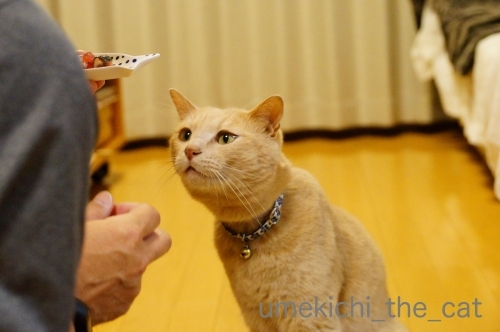
![[猫]](https://blog.ss-blog.jp/_images_e/101.gif) くださーい
くださーい
の時はこんなに神妙な顔しているのに
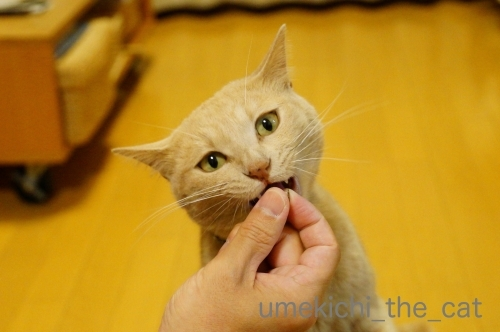
食べ始めるとこの顔ですw
キバがポイント♡

かなり悪いです。
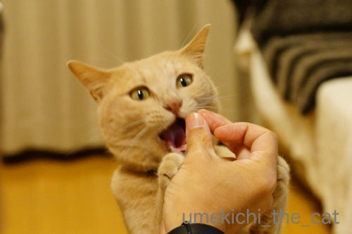
悪いというよりなにかに憑依されている系。
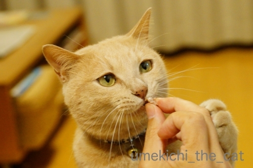
真剣な悪顔が素敵♪
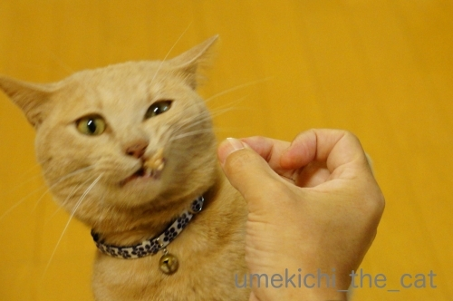
ワイルド感溢れる悪顔。
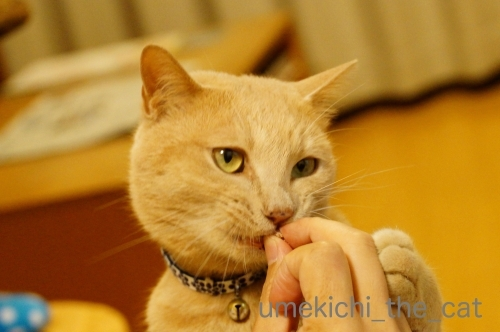
ニヒルな感じにもキメますよ(*>艸<)
おまけ
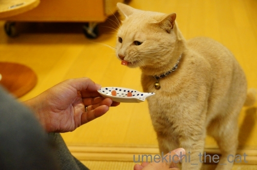
これは猫じゃない別の生物？
口元に見えているのは舌ではなくかつおです(≧▽≦)
皆さんはどの悪顔がお好みでしょうか＾＾
先日藤並 香衣さんのところで目にしたニュース。
生まれて間もない子鹿を抱っこして写真を撮ろうとする人がいるようです。
おそらく外国人旅行客だと思うのですが・・・
鹿せんべいを焦らされたり子供を抱っこされたり鹿さんの受難が続いています。
それらを食い止める有効な方法は何かしら・・・
【追記】
鹿の赤ちゃんの話、5月30日のNHKの全国ニュースでも話題になっていました。
ニュースでは出産後のお母さん鹿は過敏になっているので不用意に人間が近づくと
お乳が出なくなってしまうこともあると伝えていましたよ。
また死んだ鹿のお腹からプラスチックゴミが大量に発見されたと
#奈良の鹿愛護協会 のツイートも目にしました。
どれもニンゲンがマナーを守れば防げることばかりです！
Twitterで心ある方が各国言語に翻訳してくださっているのを発見。
Twitter民の方々、リツイートをお願い致しますm(_ _)m
 ↑ガブッと一押し↑
↑ガブッと一押し↑
の時はこんなに神妙な顔しているのに
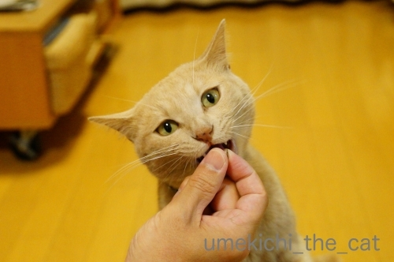
食べ始めるとこの顔ですw
キバがポイント♡

かなり悪いです。
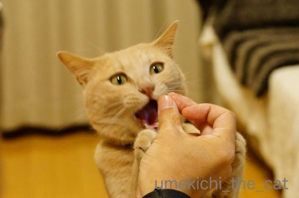
悪いというよりなにかに憑依されている系。
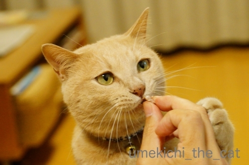
真剣な悪顔が素敵♪
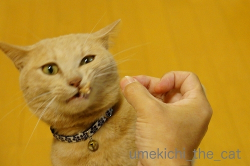
ワイルド感溢れる悪顔。
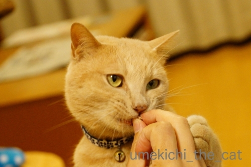
ニヒルな感じにもキメますよ(*>艸<)
おまけ
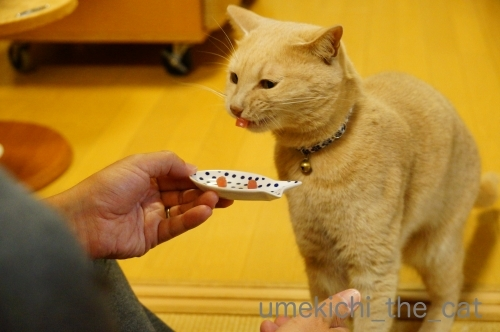
これは猫じゃない別の生物？
口元に見えているのは舌ではなくかつおです(≧▽≦)
皆さんはどの悪顔がお好みでしょうか＾＾
先日藤並 香衣さんのところで目にしたニュース。
umeki_chiiRT @nara_aigokai: 【見たら必ずRTしてください】 子鹿には絶対に触らないでください。 子鹿に人間の匂いが付いてしまうと、お母さん鹿が子育てをしなくなります。 お母さん鹿がいなくては、子鹿は生きていけません。 絶対に、触らないでください。 #奈良の鹿愛護…05/29 15:05
生まれて間もない子鹿を抱っこして写真を撮ろうとする人がいるようです。
おそらく外国人旅行客だと思うのですが・・・
鹿せんべいを焦らされたり子供を抱っこされたり鹿さんの受難が続いています。
それらを食い止める有効な方法は何かしら・・・
【追記】
鹿の赤ちゃんの話、5月30日のNHKの全国ニュースでも話題になっていました。
ニュースでは出産後のお母さん鹿は過敏になっているので不用意に人間が近づくと
お乳が出なくなってしまうこともあると伝えていましたよ。
また死んだ鹿のお腹からプラスチックゴミが大量に発見されたと
#奈良の鹿愛護協会 のツイートも目にしました。
どれもニンゲンがマナーを守れば防げることばかりです！
Twitterで心ある方が各国言語に翻訳してくださっているのを発見。
Twitter民の方々、リツイートをお願い致しますm(_ _)m

カフェオレ色の梅吉

梅吉 2023年8月10日 永眠


梅吉と出会った譲渡会

犬猫の理由なき殺処分ゼロ
妄想広告
UMEKICHI 光

爆発的に早い！
時々攻撃的！
Thanks to Mr.Boss365
爆発的に早い！
時々攻撃的！
Thanks to Mr.Boss365

梅吉さんは良い子だからあんまり悪顔に見えないよー。おまけのワンちゃん顔が可愛いかな。
お母さんに見放された子鹿可哀想ですね。
by zombiekong (2019-05-30 01:26)
どれもかわいいですー。全然悪顔じゃないですよぉ。
ニヒルな感じってのは納得のお顔です。
子鹿の件、困りますねぇ。現地でビラを配布するとか。うーん、それはゴミが増えそうだし。うーーん、なにか有効な手はないかしら。
by ChatBleu (2019-05-30 06:11)
強いてあげるとしたら4枚目の片目が細いやつかな＾＾
by ぽちの輔 (2019-05-30 06:22)
どれも可愛くて萌えますが＾＾
大きく口を「あーん」と開けた写真=(^.^)=
「食べちゃうぞ」って言いたそうな顔が好きです♪( ´▽｀)
by ニッキー (2019-05-30 07:11)
梅吉さん、必死に食いついてますね。
by ニコニコファイト (2019-05-30 07:12)
ご飯タイム・おやつタイムは 真剣、目の色が変わるとはこのことですね
うちのワンコも 時々憑依したかのようでした 幸せの瞬間かもしれませんね
かおつ 笑
by チャー (2019-05-30 07:14)
神妙なお顔も可愛過ぎ♪
４枚目の大きなお口もいいですねぇ～(#^.^#)
ただ食べているだけなのに
いろいろな表情で楽しませてくれますよね♪
by きぃ (2019-05-30 08:52)
梅吉さん食べるのに夢中ですね！
思い切り食べていますね(^^)
by ma2ma2 (2019-05-30 10:21)
6枚目に一票！
でも4枚目のもいいなぁ(^｡^)
by よーちゃん (2019-05-30 10:26)
梅吉さん、どの顔も悪顔じゃないですよ☆
キュートです(^^)
小鹿を抱くなんてどんな神経しているんでしょうね。
って言うか、奈良のヒトなら親鹿の怖さも知っている
ので繁殖時期の鹿にはわざわざ触らないのですが…。
ホント猫でも犬でももちろんニンゲンンでも本人の許可なく
触らないで欲しいですね(-"-)
by あとりえＳＡＫＡＮＡ (2019-05-30 11:07)
こんにちは。
悪顔ではなく、飽きない顔？ですね
７枚目の写真が特に好きです。
「おいちー」みたいなキメ顔好きです。おやつの与え甲斐があります。
かつお！！梅ガツオ完成ですね？
神鹿さんの子鹿、心配ですね。
日本人でも「鹿を驚かせている人」を見た事あります。
もう少し「神鹿」の教育・広報が必要ですね！？(=^･ｪ･^=)
by Boss365 (2019-05-30 11:46)
食べ物に集中してる梅吉さん、どれも素敵です♪
人間の匂いがついたら子育てしないって、鳥さんと同じなんですね。
野生動物をペットのように思ってる観光客は困りますね。
by nachic (2019-05-30 12:43)
よだれが零れ落ちそうな「くださ～い」が好き。
ちら牙好きとしては食べ始めも捨てがたく・・・。
指先をあむっとしてる7枚目もいいな～って選べません！(#^^#)
小鹿を抱きあげるなんて・・・母鹿に一発蹴っ飛ばされるといいと思います！
市街地の公園、そうでなくても車やカラスなど危険がいっぱいなのに、母鹿とはぐれてしまったら大変ですよね。
インスタ映えなのか無茶する人が多いのがとても残念です。
by ゆきち (2019-05-30 12:57)
悪顔？どれも可愛いじゃん（ﾟ□ﾟ）
鹿に触れたら罰金とかの条例を作るとか？
by 英ちゃん (2019-05-30 16:18)
梅吉さんの一粒ずつ？食べる姿いいですね(^^
これはおやつ係と撮影係さんが必要ですね。
悪顔というか・・・真剣な表情が萌ですわ～(笑
小鹿さん問題は昨日藤並香衣さんのブログでも呼びかけていました。
人間のにおいがつくと母鹿が育児放棄してしまうて・・・
いくら可愛くても鹿の世界に土足で踏み込んではいけませんね。
よその赤ちゃんを黙って抱っこしたら犯罪もんですしね。
by marimo (2019-05-30 16:46)
ご飯をゲットした～！って感じの顔してますね。
みんな良い表情に見えますよ(^^)
by kou (2019-05-30 20:23)
梅吉さんのカツオを見つめる真剣な顔（笑）
3枚目の食べているのに、
意識が向こうに行ってる写真が好きです。
5枚目の口の感覚を研ぎ澄ませているところも、
いいですね。
結局は全部素敵な梅吉さんでした（笑）
by kiki (2019-05-30 21:26)
おやつをあげている右手をマイクとして考えると
なかなかいいパフォーマンスのロックシンガーですよ、梅吉さん！^^)
奈良の鹿って動物園の動物と違い野生なんですよね。
野鳥の雛が巣から落ちていても、親鳥は必ずそれを見ているから絶対触ってはいけないって言うのと一緒かもしれませんね。
by yes_hama (2019-05-30 21:35)
梅吉君表情が豊かでどの顔も可愛い～
奈良公園の鹿の件、記事にしてくださってありがとうございます
by 藤並 香衣 (2019-05-30 22:45)
ねこの表情ってほんと可愛くって面白くって癒されて・・
いろんなものをくれますねっ♪
by yuppie (2019-05-31 00:56)
真剣な顔はどうしても悪顔なる！
そしてそこがどうしようもなく可愛いのーーー^^
どのお顔もかわいいよ、梅吉くん^^
たとえ野生動物だってことを知らなかったとしても
そもそも外に居る動物に触れるということはしちゃいけないとおもうの。
人間が触れる、それは触れた人間が責任を持ってその動物を世話するってことだと私は思っているんだ。
可愛い可愛いだけで、その場だけで、そういう考えは改めた方が良いと思うんだー。
by リュカ (2019-05-31 10:10)
私は2枚目のキバ見えの1枚がお気に入りでございます(≧▽≦)
by palpal (2019-05-31 20:21)
梅さまって、目尻のとこのきゅ〜っとなって、きゅっ（分かります？）
ってラインが独特ですよね。
えっ・・・個人的には全然『悪顔』じゃないですよ（*´∀｀*）
カツオもうまうま♡ですね。
動物の子ども、仔猫や子ヒグマも？もそうですが
人ってなんでまず手が出ちゃうんですかね。
マナーの悪い人こそ、そもそもこういう警告を見ない人な気もします・・・。
鹿公園はふれあいの場所でもあるから、むずかしい面も多そうです。。
by Ja-Kou66 (2019-06-01 00:04)
梅吉さん、どのワル顔も可愛い～＾＾
おてて添えてると、ぜんっぜん悪く見えないにゃん。
ワイルド感あふれる顔がいい！
子鹿‥抱き上げるなんて！
とはいえ、親が世話しなくなるとまでは知りませんでした。あんなに人間慣れしている様子なのにねえ。それは周知徹底しなくてはね。ガードする人も必要？
by sana (2019-06-01 16:21)
お顔もなんですが、やっぱり
手を添えられるとカワイ~♪
と思ってしまうわたしです。
by ふにゃいの (2019-06-02 14:17)
ふふ 梅ちゃんの悪顔もかわいいです♪
というか、お目目がやさしいから悪顔には
見えないかも(*´艸｀*)
キバがたまりませんっ(ﾟｰ,ﾟ*)ｼﾞｭﾙﾙﾙ
奈良の鹿問題、私も気になっていました。
某国の観光客にかなり無茶されているのを
見て、ムカムカしていますo(｀ω´*)o
特に子鹿には触っちゃいけないのですね。
ツイートが拡散されて、マナーがよくなれば
いいですが、いろんな人がいますからね...
by カトリーヌ (2019-06-03 14:24)
皆様、お返事ごめんなさいですm(_ _)m
by ちぃ (2019-06-03 20:20)